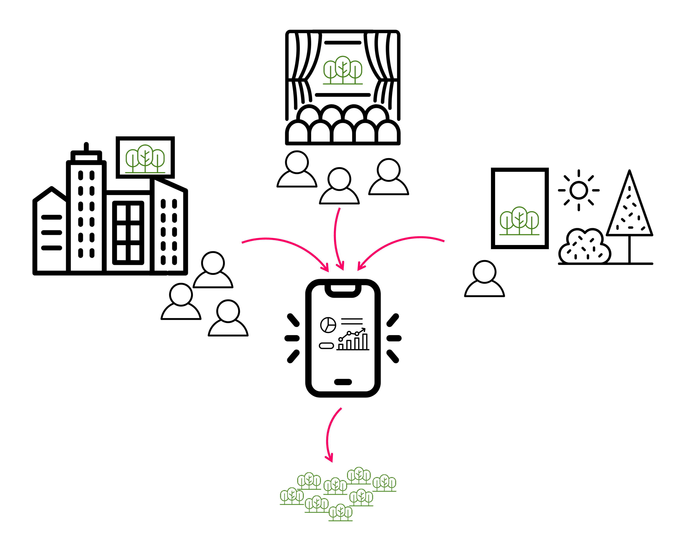
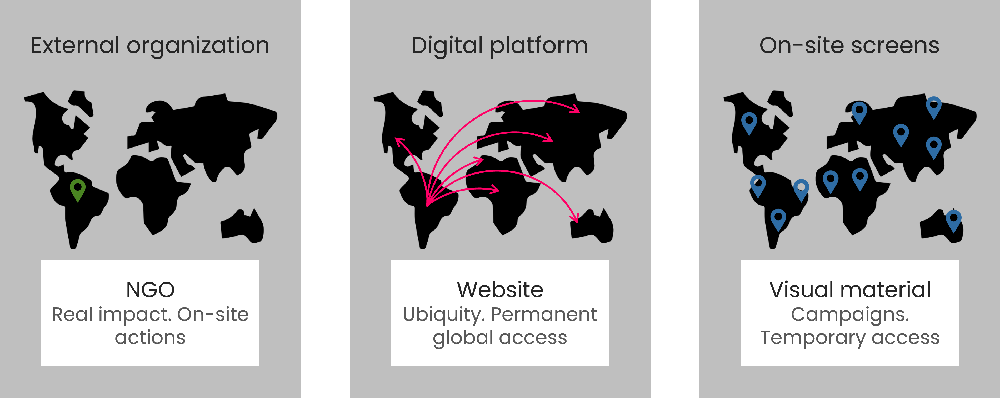
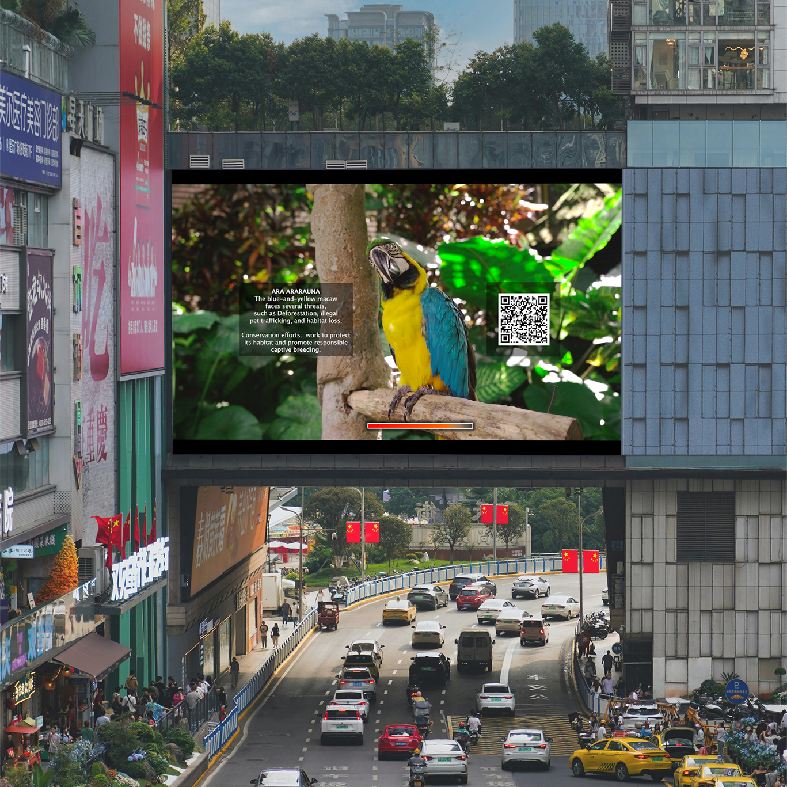

Hybrid Natures
Platform strategy · UX research · Platform and system architecture · Interaction design · Generative systems · Prototyping
Platform translating environmental data into progressive narrative interaction and generative artifacts functioning as participation interfaces, enabling users to explore, contribute, and engage with real-world socio-environmental systems over time.
Impact
- Designed and implemented a deployed proof-of-concept digital platform prototype translating environmental data into progressive interaction flows and generative artifacts, structuring a journey from global environmental context to personally relevant impact.
- Defined the platform architecture, interaction model, and narrative flow, transforming complex socio-environmental systems into structured and accessible user journeys.
- Designed, developed, and deployed generative artifacts using real environmental data, testing their technical behavior and integration as interaction mechanisms and contribution interfaces within the platform prototype.
- Established a scalable platform framework designed to support future governance, collective participation, and sustained engagement.
Overview
Hybrid Natures is a participatory digital platform designed to enable users to explore and engage with environmental systems through interactive, data-driven experiences. Environmental data is translated into narrative interaction and generative artifacts, enabling users to explore causes, contribute, and build ongoing relationships with real-world ecosystems.

The first implementation focuses on the Amazon Rainforest, translating deforestation and climate data into interactive platform experiences and contribution mechanisms.
Platform ecosystem
The platform was designed to support transparent contribution, progressive engagement, and long-term participation.
- Environmental data acts as the primary input shaping platform content and artifacts.
- Generative artifacts function as interaction and contribution interfaces.
- Narrative interaction flows guide users from awareness to active participation.
- Governance framework was designed to support future collective decision-making (not yet implemented in the current prototype)
The system extends into public environments through distributed screens, enabling discovery outside intentional platform access and creating entry points for participation in cultural and community spaces. These screens are designed as audiovisual narrative interfaces into the ecosystem: real Amazon rainforest footage following the same progression as the platform’s story, augmented with lightweight game-like hotspots. Hotspots connect directly to platform chapters and unlock additional layers of context and participation through mobile interaction and AR.

System components
Hybrid Natures was conceived as a hybrid system combining a digital platform with distributed physical access points. The broader system design includes decentralized screens to bring the experience into public and cultural spaces, extending engagement beyond the personal device. These physical elements were defined as part of the system architecture and future implementation roadmap. In the envisioned deployment, screens would feature real rainforest video sequences aligned to the platform narrative, with game-like hotspots that link into the platform and reveal additional layers via AR.
As a proof of concept, I designed and prototyped the core digital platform, implementing the architecture, interaction model, and generative systems into a functional web-based environment.
Core prototype components:
- Web-based platform and interaction interface.
- Integration of Amazon Rainforest environmental data into narrative sequences and generative artifact logic.
- Generative system producing dynamic digital artifacts from real-world data.
- Interaction flows supporting exploration, contribution, and artifact ownership.
- Governance framework defined as a foundation for future collective participation (not yet activated).
Together, these components form a proof-of-concept platform prototype integrating environmental data, generative systems, and participatory interaction into a coherent product experience.

Prototype highlights
The functional prototype demonstrates how environmental data, generative systems, and interaction design operate as an integrated product platform.
- Implemented a complete interaction flow connecting environmental data, generative artifacts, and platform navigation.
- Designed progressive narrative sequences guiding users from contextual understanding toward active participation.
- Developed generative artifacts using real environmental data, functioning as both experiential outputs and contribution interfaces.
- Designed a four-tier participation model enabling different levels of access, ownership, and engagement, establishing the foundation for a scalable and inclusive participation economy.
- Defined a platform structure supporting future governance, collective participation, and long-term system evolution.
The tiered participation model supports progressive engagement, allowing users to move from initial exploration to deeper involvement while maintaining an accessible entry point across different levels of commitment.
Notes
Deployed proof-of-concept platform prototype independently designed and developed, initially created as my Master’s thesis in
Creative Computing (ELISAVA & UVic-UCC), and continued as an ongoing platform development project.
The project was later presented at the International Colloquium Extractivismos (Argentina, 2025), a research forum
exploring socio-environmental systems and cultural infrastructures.
I led all stages of the project, including platform architecture, interaction design, data integration, and
generative system development. This included designing the participation model, defining the token logic, and deploying the smart contract infrastructure supporting artifact ownership.
Generative
artifacts were created using p5.js and real environmental data, and deployed through a Web3
infrastructure as part of the platform’s participation model.
Hybrid Natures serves as an active foundation for ongoing platform development and future deployment.
Full case study →